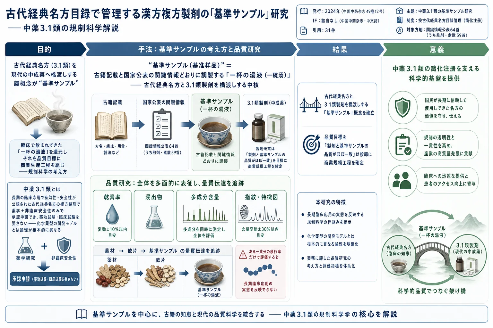

古代経典名方目録で管理する漢方複方製剤の「基準サンプル」研究——中薬3.1類の規制科学解説

<!-- 方針: ほぼ全訳＋必要に応じた補足。原文（中文・药事管理コメンタリ）構成に沿って訳出。本文の[N]は原文の番号引用に対応し末尾の参考文献にリンクする。原文は政策解説で図表なし（原本PDFをPyMuPDFで全5ページ確認、埋め込み画像0・実質的な図版なし。奇数頁の多数の描画オブジェクトは誌面の装飾枠）。「> 補足:」は訳者注。 -->
書誌情報
- 原題: 试论按古代经典名方目录管理的中药复方制剂的基准样品研究（Discussion on reference sample research of traditional Chinese medicine compound preparations developed from catalogued ancient classical prescriptions）
- 著者: 赵晓霞（ZHAO Xiao-xia）・阳长明（YANG Chang-ming）\*・韩炜・曲建博・顾宇凡・关宏峰・赵巍・孙昱（国家薬品監督管理局 薬品審評中心 薬品監管科学全国重点実験室, 北京 100076, 中国）
- 掲載: 中国中药杂志（China Journal of Chinese Materia Medica）, 2024, Vol. 49, No. 12, 3040–3047 相当. DOI: 10.19540/j.cnki.cjcmm.20240315.601
- 区分: ·药事管理·（薬事管理） ＝規制・審評の論理を解説するコメンタリ／総説
- 助成: 国家薬監局 中国薬品監管科学行動計画プロジェクト（国薬監科外〔2019〕23号）／2023年 薬品監管科学全国重点実験室 第一次課題
- インパクトファクター: 該当なし（中文核心誌でJCR収載外。中薬分野の代表的学術誌）
- 通信著者: 阳长明（主任薬師。薬品監管科学研究および中薬薬学審評に従事）
補足: 本稿の著者らは 国家薬監局 薬品審評中心（CDE） の審評官である。すなわち本稿は、外部研究者による技術論文ではなく、審査する側の当局が「基準サンプル」という新概念の意図・要求水準・審査の考え方を業界に説明する公式コメンタリである。したがって数値実験や図表はなく、「制度をどう理解し、どう研究開発を進めるべきか」を説く政策・規制科学の文章になっている。日本の読者には、PMDA の審査担当者が新しい審査ガイドラインの背景と運用方針を解説論文として発表したもの、と考えると位置づけが分かりやすい。
用語の整理（訳者による前置き）
原文を読み進める前に、繰り返し出てくる中国独自の制度用語を整理しておく。
- 古代経典名方（古代经典名方）＝今日なお広く用いられ、効能が確かで、明らかな特色と優位性をもつ、古代の中医典籍に記載された方剤。中医薬法で定義される。
- 中薬3.1類（中药3.1类）＝2020年の《中薬注册分类和申报资料要求》による登録分類の一つで、「按古代経典名方目録管理の漢方複方製剤」を指す。長期の臨床応用で有効性・安全性が公認されているため、薬学研究＋非臨床安全性研究を終えれば、薬効薬理試験や臨床試験を経ずに一括して上市（販売）許可を申請できる、簡化された登録経路。
- 物質基準（物质基准）＝古代医籍記載の調製法どおりに作った「中薬の薬用物質の標準」。品質管理の基準とする。成型（製剤化）工程を除き、調製法は古籍記載と基本的に一致させる。
- 基準サンプル（基准样品）＝《指導原則》が新たに導入した概念。国家公表の「関鍵情報」および古籍記載どおりに研究・調製する試料で、古代経典名方と3.1類製剤を橋渡しする。本稿の主題。
- 関鍵情報（关键信息）＝国家中医薬管理局・国家薬監局が方剤ごとに公表する、薬味名称・基原および薬用部位・炮制規格・換算用量・用法用量・機能主治などの現代的な対応情報。
- 量質伝達（量质传递）＝薬材→飲片→基準サンプル（→製剤）と加工が進む各段階で、指標成分の量と品質がどのように移行・変化するかの規律。日本語では「量的・質的な伝達（移行）」の意。
要旨（摘要）
《按古代経典名方目録管理的中薬複方製剤薬学研究技術指導原則（試行）》は「基準サンプル」の概念を提起した。基準サンプル研究は、古代経典名方目録で管理される漢方複方製剤の研究における鍵となる環節（プロセス）である。本稿は、古代経典名方の漢方複方製剤（中薬3.1類）の特徴、および基準サンプル研究の目的を分析することを通じて、基準サンプル研究の主要な内容を検討・解説する。さらに、この種の製剤の研究開発と審評の実際、および中薬監管科学の研究成果と結び付けて、この種の製剤の研究開発に対する提言を行い、業界の同僚諸氏の参考に供する。
- キーワード: 漢方複方製剤／古代経典名方目録／基準サンプル／品質研究／中薬監管科学
序論——経典名方をめぐる制度の整備
《中華人民共和国中医薬法》[1] は、「経典名方とは、今日なお広く応用され、効能が確かで、明らかな特色と優位性をもつ、古代中医典籍に記載された方剤を指す」と明確に定めている。2017年7月1日の《中華人民共和国中医薬法》施行から今日に至るまで、《薬品管理法》《薬品注册管理弁法》の改正、および《中薬注册管理専門規定》[2] の公布・施行を相次いで経て、国家薬品監督管理局・国家中医薬管理局は、経典名方の研究開発をめぐって関連の付随文書と技術指導原則を続々と打ち出してきた。
その主な経緯は次のとおりである。
- 2018年4月16日：国家中医薬管理局が《古代経典名方目録（第一批）》[3] を発布し、第一次分の100首の古代経典名方目録を公表した。
- 2018年6月1日：国家薬品監督管理局が《古代経典名方中薬複方製剤簡化注册審批管理規定》[4]（2018年第27号。以下《簡化管理規定》）を発布し、経典名方漢方複方製剤の登録申請手続きと技術要求を初めて提起した。
- 2020年9月27日：国家薬品監督管理局が発布した《中薬注册分類和申报資料要求》（2020年第68号）[5] が、中薬の登録分類を改めて区分し直し、按古代経典名方目録管理の漢方複方製剤を 中薬注册分類3.1類（以下「中薬3.1類」）に位置づけた。そして、中薬3.1類は研究資料を完成させた後に一括して上市許可を申請できることを明確にした。
- 2020年11月10日：国家中医薬管理局・国家薬品監督管理局が《古代経典名方関鍵情報考証原則》および《古代経典名方関鍵情報表（7首方剤）》[6] を発布した。
- 2021年8月27日：国家薬品監督管理局 薬品審評中心が《按古代経典名方目録管理的中薬複方製剤薬学研究技術指導原則（試行）》[7]（以下《指導原則》）を発布し、中薬3.1類の研究開発の技術要求を明確にした。
《指導原則》は「基準サンプル」の概念を初めて提起した。これは薬審中心（CDE）が、古代経典名方をどのように現代応用の中成薬製剤へ転化するかを考え、答えを出そうとする過程で、中薬監管科学の研究を通じ、業界の英知を結集し、《指導原則》の合意を形成する過程で徐々に研究・精錬されてきたものであり、中薬3.1類の研究開発にとって重要な意義をもつ。
1. 中薬3.1類の特徴
《中共中央国務院の中医薬の伝承・イノベーション発展の促進に関する意見》[8] は、「中医薬理論・人用経験・臨床試験を結合した中薬注册審評の証拠体系の構築を加速する」と指摘している。《中華人民共和国中医薬法》の経典名方に関する規定から分かるように、これまでの中薬新薬研究が化学薬物の研究開発の経路・モデルを参照していたのとは異なり、中薬3.1類は臨床実践において長期にわたり応用され、中医理論の指導下で応用してきた有効性・安全性が十分な臨床実践によって検証済みで、かつすでに業界公認となっている。それゆえ、薬学研究および非臨床安全性研究を完成させれば、直接に上市許可を申請できる。
中薬3.1類という登録分類を設定した目的は、古代経典名方の中薬新薬への転化を促進することにある。この種の製剤の研究開発では、まず目録を制定して研究範囲を明確にする必要がある。次に、研究を通じて製剤の生産工程と工程パラメータを確定し、製剤が経典名方の臨床応用時の薬用物質品質と一致することを保証し、さらに薬材・飲片・調製工程の管理を通じて製剤品質のバッチ間安定性を保証する。
《中華人民共和国中医薬法》は、古代経典名方の「具体的な目録は国務院中医薬主管部門が薬品監督管理部門と共同で制定する」と明確にしている。現在までに、国家中医薬管理局は 2批・計324首 の方剤目録[3, 9-10] を発布しており、そのうち7首の小児科目録、124首のチベット族・モンゴル族・ウイグル族・タイ族の方剤目録を含む。しかし、経典名方目録には出典・処方・製法および用法・剤型の情報しか含まれていない。そのため国家中医薬管理局・国家薬品監督管理局は《古代経典名方関鍵情報考証原則》を発布し、「古（いにしえ）に遵（したが）う」ことを基礎としつつ、当面の臨床・生産の実際を十分に考慮し、伝承と発展の観点から、経典名方における薬物の基原・炮制・剤量・煎煮法・効能などの鍵となる共通の問題を認識し、経典名方の開発に根拠を提供すべきことを明確にした。
すでにそのうち 64首の方剤の関鍵情報[6, 11-13] が発布されている。関鍵情報では、各方剤の現代における対応状況——薬味名称・基原および薬用部位・炮制規格・換算剤量・用法用量・機能主治——を明確にし、なお論争のある問題については備考によって提言を行っている。
しかし関鍵情報は 個別化された用薬（個々の患者への処方）を対象としたもの である。これを、医薬品の要求に適合し、商業規模の生産に適応した医薬品へどのように転化するかが、中薬3.1類が直面する巨大な挑戦であり、経典名方の中薬新薬への転化における最も鍵となる環節でもある。
2. 基準サンプル研究の目的
《簡化管理規定》は、経典名方が我が国において悠久かつ豊富な人用（ヒトへの使用）の歴史をもつ一方で、薬材が不安定で成分が複雑なため、その品質のバッチ間一致性が影響を受けやすく、効能の穏健な発揮に不利であることを説明している。そのために 物質基準 の管理要求を導入し、これを品質管理の基準とした。そして「経典名方物質基準」を、「古代医籍に記載された古代経典名方の調製方法を根拠として調製して得られた、中薬の薬用物質の標準。成型（製剤化）工程を除き、その他の調製方法は古代医籍の記載と基本的に一致させるべきもの」と定義した。
関連作業がさらに明確化されるにつれ、多方面の討論を経て《指導原則》は 基準サンプル の概念を提起し、「国家が発布した古代経典名方の関鍵情報および古籍記載の内容に基づいて、基準サンプルを研究・調製すべきである」と明確にした。基準サンプル研究の目的は、これを切り口として、古代経典名方と中薬3.1類製剤を橋渡しすることにある。
中薬3.1類の研究開発と審評の論理は、その長期の臨床応用における安全・有効性に基づくものである。基準サンプルを通じて、臨床使用の、古代経典名方の物質基礎と安全有効性を担った「一碗湯（一杯の湯液）」を還元し、そのうえで「製剤と基準サンプルの品質が基本的に一致すること」を製剤研究の要求とすることで、医薬品の要求に適合する商業規模の生産を実現し、古代経典名方を中成薬へ転化するという現代応用の臨床ニーズに応える。
補足: 「一碗汤（一杯の湯液）」という表現がこの制度の核心を象徴している。すなわち、経典名方が長年、患者に実際に飲まれ効いてきた「湯液そのもの」を、現代の分析・製造技術で忠実に再現した試料が 基準サンプル である。新薬のように「有効成分を突き止めて最適化する」のではなく、「昔から効いてきた湯液」を品質のゴール（＝基準）に据え、それに一致する製剤を工業的に安定生産することが目標になる。発想の向きが化学新薬とは逆である点が重要。
3. 基準サンプル研究の主要内容
《指導原則》は、古籍記載と関鍵情報を基礎として基準サンプルを研究・調製し、次いで体系的な品質研究を通じて合理的な指標を選んで基準サンプルの品質を全体として表征し、さらに多バッチの基準サンプルの品質研究を通じて品質管理指標と範囲を確定して、中薬3.1類製剤の品質目標とし、これを用いて商業規模製剤の工程条件と工程パラメータを研究・確定することを要求している。
3.1 国家発布の関鍵情報および古籍記載に基づく基準サンプルの研究・調製
基準サンプルの調製は、まず公表された「関鍵情報」との一致を保証しなければならない。中薬3.1類の研究開発について、国家中医薬管理局が「関鍵情報」の中ですでに明確にした内容は、中医薬専門家が文献考証を基礎として達した専門家合意とみなすことができ、研究者はそれを直接に引用でき、文献考証の関連資料を別途提出する必要はない。
3.2 薬材の品質研究
薬材は中薬製剤の研究開発と生産の原料であり、その品質は中薬製剤の安全性・有効性・品質可制御性に影響する鍵となる要因である[14]。中薬新薬に用いる薬材の要求については、《中薬新薬用薬材質量控制研究技術指導原則（試行）》[15] に、基原および薬用部位・産地・採収・産地加工・品質管理などを含めて詳細に論じられており、これは経典名方複方製剤の研究開発で用いる薬材の選択と評価の重要な根拠でもある。基準サンプル研究に用いる薬材については、以下のいくつかの側面に重点を置くべきである。
3.2.1 基原と薬用部位
《指導原則》は、「薬材の基原と薬用部位は、国家が発布した古代経典名方の関鍵情報の内容と一致させるべきであり、多基原の薬材の場合は一般に一つの基原に固定すべきである」と明確にしている。どうしても複数の基原を使用する必要がある場合は、十分な根拠を提供し、使用比率を固定して、製剤品質の安定を保証すべきである。
3.2.2 産地
伝統的な中医薬理論は、豊富な臨床実践を通じて、産地が薬材品質に影響する重要な要因の一つであることを観察・総括してきた。異なる地域では気候・土壌などの条件が異なるため、薬材品質に差異があり、産地の固定は薬材品質を相対的に安定させる重要な措置である。
研究では、文献調査・産地考察などの方法を通じて、薬材の道地産区（本場の産地）・主産区・核心分布区・適生区などの状況を把握し、薬材の生育習性・臨床用薬経験と伝統的習慣・資源評価の状況・栽培養殖条件などを総合的に考慮して、薬材産地を合理的に選択できる。また、適宜の分析手段を採り、研究を通じて異なる産地の薬材の品質差異の状況を把握し、総合的に評価して選択することもできる。たとえば李暁芳ら[16] は、甘草の指紋図研究において同時に化学計量学（ケモメトリクス）の方法を用い、クラスター分析・主成分分析などを通じて、異なる化学成分と産地との関連性を検討し、薬材品質評価にデータ的根拠を提供した。
一般に、3か所以上の産地・計15バッチ以上の薬材 の品質について研究・分析し、薬材の産地・生育年限・採収期・加工および品質要求などの情報を確定すべきである。中薬材生産品質管理規範（GAP）の要求に適合する薬材の使用が奨励され、薬材の栽培過程と農業投入品の使用を規範化することで、薬材品質と来源のトレーサビリティを保証し、ひいては医薬品品質の安定・均一を管理する。品質安定が保証される前提のもとでは、薬材は複数の産地から選択してもよい。
3.2.3 薬材の品質管理
《指導原則》は、薬材基原・産地・栽培養殖・生育年限・採収加工・飲片炮制および包装貯蔵などの多くの側面から薬材と飲片の品質管理を強化し、源頭（源流）から製剤の品質を保障すべきことを明確にしている。《中薬新薬用薬材質量控制研究技術指導原則（試行）》は、「中薬新薬用薬材の品質標準は、製剤の品質管理の必要に応じて研究・完善すべきである」と提起している。
薬材の品質標準は、品質分析と関連性研究の結果に基づき、伝統的な鑑別手段を十分に考慮し、現代の物理・化学・薬理毒理研究の報告状況と結び付けて、性状・色沢・気味・化学成分・生物活性・外源性汚染物などの側面から全体的な品質評価を行い、有効な措置を採って薬材品質を相対的に安定させるべきである。
基準サンプル研究に用いる薬材は、《中薬新薬用薬材質量控制研究技術指導原則（試行）》の関連要求を参照し、薬材—飲片—基準サンプルの量質伝達の規律を研究することを通じて、処方中の各薬味が基準サンプルの品質管理に及ぼす影響を検討し、適切な品質管理指標と管理範囲を制定して、基準サンプルの品質変動を低減すべきである。
3.3 飲片の品質研究
中薬製剤に直接投入する処方薬味は 飲片 である。薬材から飲片への炮制（加工）の過程は、中薬の薬性理論を体現する鍵となる環節である。異なる炮制方法・工程の飲片は、薬性に大きな差異が存在しうる。《指導原則》は、飲片の品質管理を強化し、源頭から製剤の品質を保障することを要求している。飲片の炮制規格は、国家が発布した古代経典名方の関鍵情報と一致させるべきである。
飲片の炮制工程は、炮制方法と詳細な工程パラメータを明確にする必要があり、輔料（補助材料）がある場合は、さらに輔料の執行標準・種類・用量などを明確にし、確定した炮制工程によって要求に適合する飲片を持続的・安定的に生産できることを保証すべきである。国家標準または地方炮制規範がある場合は、関連規定に従って炮制し、具体的な工程パラメータを研究・確定すべきである。まだ飲片標準がない場合は、古籍文献の記載に基づき《中国薬典》の炮制通則を参考にして飲片の標準を研究・確立すべきであり、具体的な研究と品質管理の要求は《中薬新薬用飲片炮制研究技術指導原則（試行）》を参考にできる。
《指導原則》は、品質分析と関連性研究の結果に基づいて飲片の品質標準を制定・完善すべきことを明確にしている。直接投入する原料として、飲片の品質は基準サンプルの品質に直接影響する。そのため飲片の品質標準は、飲片自体の品質管理要求を体現するほか、基準サンプルにおいて研究・確定された品質管理指標をいずれも対応する飲片標準の中に反映させ、その量質伝達の規律に基づいて飲片の品質管理要求を明確にすべきである。
3.4 基準サンプルの調製
《指導原則》は、「国家が発布した古代経典名方の関鍵情報および古籍記載の内容に基づいて基準サンプルを研究・調製すべきである」と明確にしている。
基準サンプルは原則として関鍵情報と一致を保つべきである。たとえば 開心散 では、関鍵情報で「細粉に粉砕する」と明確にされており、その基準サンプルは細粉であるべきである。関鍵情報で服用方式が煎剤または煮散である場合、《指導原則》に基づき、基準サンプルは煎液・濃縮浸膏または乾燥品として調製でき、具体的にどの形式を採るかは煎液に含まれる薬用物質の性質に応じて研究・確定すべきである。基準サンプルが古代医籍記載の服用薬物形式と差異がある場合は、薬用物質に変化が生じたか否かを考慮し、起こりうる変化について評価する必要がある。
関鍵情報で調製工程およびパラメータが明確な場合、基準サンプルの調製工程パラメータは関鍵情報と一致させるべきである。調製工程パラメータが不明確な場合は、関連法規と技術要求を参照して研究・明確化すべきである。すでに関鍵情報が発布されている64首の方剤のうち、2つの丸剤（消乳丸・蘇葶丸）と3つの散剤（開心散・清寧散・槐花散） を除き、残りの 59首はいずれも煎剤または煮散 である。そのうち苓桂朮甘湯・温経湯・枇杷清肺飲などの方剤は得られる煎剤量を明確にしているが、いずれも「加水（または黄酒）……mL、煮取（または煎至）……mL」と表述されており、煎煮方式・煎煮時間などについては明確な表述がない。基準サンプルの調製を行う際には、なお煎薬器具・煎薬時間・火加減（火候）の大小およびその調節法などをさらに研究・考察して、各工程パラメータを固定し、調製過程における各要因が煎剤品質に及ぼす影響を有効に管理する必要がある[17]。国家が発布した古代経典名方の関鍵情報または古籍記載の内容で、煎煮回数と煎剤得量が明確でなく、単に「水煎服」とだけ表述されている場合は、《医療機構中薬煎薬室管理規範》を参照し、品種の具体的な研究状況と結び付けて、調製工程およびそのパラメータを合理的に確定できる。
研究で確定した工程に従って、15バッチ以上の基準サンプル を調製して品質研究に用いる。処方に含まれる各薬味の量は一般に多くないため、基準サンプルを研究・調製する際には、飲片のサンプリングの代表性に注意し、飲片のサンプリングが不均一なことによって基準サンプルの品質が変動することを避けるべきである。
3.5 基準サンプルの品質研究
基準サンプルは、方剤の臨床応用の実際の状況と中薬3.1類製剤の開発とを橋渡しする架け橋であり、製剤工程研究の目標はまさに、製剤と基準サンプルの品質が基本的に一致することを保証することにある。それゆえ、ある学者ら[18-19] は、経典名方製剤の研究開発が成功する鍵は、中薬経典名方物質基準の品質管理技術をいかに突破するか、および薬材—飲片—物質基準の量質伝達の規律を全面的・正確に解明するかにあり、鍵となる品質属性の識別と量質伝達を核心とする製剤過程の品質管理体系を確立することが、高品質な経典名方の研究開発の核心である、と指摘している。
3.5.1 品質管理指標の研究・選択
中薬は成分が多数かつ複雑であり、化学薬品の研究開発・品質管理のモデルは、全体として薬用する中薬製剤の開発には適用しがたい。《中薬注册管理専門規定》は、中薬注册標準の研究・制定は、製品の特徴に基づいて中薬の全体品質を反映する管理指標を確立し、可能な限り製品の品質状況を反映すべきことを明確にしている。
《指導原則》は次のように要求している。基準サンプルの品質研究を行い、専属性鑑別・乾膏率・浸出物／総固体・多指標成分の含量・指紋／特徴図 などを採用して全体的な品質評価を行い、その品質を表征すべきである。品質管理指標の選択と方法確立は、《中薬新薬質量研究技術指導原則（試行）》および《中薬新薬質量標準研究技術指導原則（試行）》を参照でき、同時に《中国薬典》の関連規定に適合させるべきである。
具体的な品種については、深く研究したうえで評価指標を選択する必要がある。現在、経典名方複方製剤の研究開発に関連する論文における基準サンプルの物質基礎の探索は多くの側面を包括しており、比較的よく用いられるのは次のものである。
- 基準サンプルに含まれる化学成分を直接の研究対象とするもの。たとえばクロマトグラフィー—質量分析連用（LC-MS 等）の技術を用いて、経典名方中の化学成分を系統的に分析し、後続の品質管理および薬効物質基礎の掘り下げた研究に実験的根拠を提供する[20-25]。
- 文献・化学研究・ネットワーク薬理学あるいは血清薬物化学などの手段を統合して、基準サンプルの鍵となる品質属性を識別するもの[26-28]。
- 中薬血清薬物化学の研究方法を用いて、血中に吸収された成分を研究し、基準サンプルの鍵となる品質属性を識別するもの[29]。
- 各々の鍵となる品質属性に総合的に重み付けをして、基準サンプルの鍵となる品質属性を全体として評価するもの[30]。
文献研究の報告で確定された品質管理指標は、浸膏得率・指紋図および多成分の含量測定 を主とするものが多い。異なる組方は、基本要求を満たす前提のもとで、含まれる薬味および現代研究の状況に応じて、自身の特徴に適合した品質管理方法を研究できる。
3.5.2 品質管理範囲の研究・明確化
《指導原則》は、基準サンプルの品質研究結果を分析し、各指標の合理的な範囲を確定することを要求している。たとえば、乾膏率の変動範囲は一般に平均値の ±10% を超えず、指標成分の含量変動範囲は一般に平均値の ±30% を超えない。離散の程度が比較的大きいものについては、原因を分析して的を絞った措置を採り、その変動範囲を管理し、基準サンプルの品質標準を研究・制定する。
薬材・飲片・基準サンプルの研究は各々独立した作業ではない。基準サンプルの品質安定の前提は、処方に用いる薬材および飲片の品質が均一・安定であることである。したがって、品質研究の状況に基づいて各薬味が基準サンプルの検査指標に及ぼす影響を分析し、品質管理指標が薬材・飲片・基準サンプルの間でたどる 量質伝達の規律 を検討し、これによって的を絞った措置を採って基準サンプルの品質変動を管理し、後続の製剤の全過程品質管理に根拠を提供すべきである。
4. 討論と提言
第一に、古代経典名方は、中医薬が長期の臨床実践の中で凝縮してきた精華であり、古代経典名方の中薬新薬への転化を促進することは、中薬の伝承・イノベーション発展の重要な構成部分である。《中薬注册分類和申报資料要求》によれば、古代経典名方を中薬複方新薬製剤へ転化する際には、中薬3.1類として研究開発するほか、1.1類創新薬（イノベーション新薬）など他の登録類別・研究開発経路を採ることもできる。
第二に、長期にわたり、中薬新薬は通常、化学薬物の研究開発の経路とモデルを参照してきた。前期の薬学研究と非臨床安全性評価を通じて、臨床試験許可を取得した後に、臨床薬理学研究・探索的臨床試験・確証的臨床試験を行い、薬学研究・非臨床研究・臨床試験研究で得られた研究結果と試験データに基づいて医薬品の安全・有効・品質可制御性を裏付け、承認・上市を得る——研究者はこれについて比較的よく理解し、習熟している。これに対して中薬3.1類の研究開発は、中医薬理論・人用経験・臨床試験を結合した注册審評の証拠体系のもとでの、新しい登録分類である。この種の製剤の申請は、その公認された有効性・安全性を根拠とするものであり、薬効学研究資料を提供する必要がなく、臨床試験を改めて実施する必要もない。したがって、この種の製剤は、その特有の研究開発の考え方に基づき、《指導原則》の要求に従って関連の研究開発を進めるべきである。
第三に、基準サンプルの研究・調製は、中薬製剤の薬材・飲片から製剤調製に至る全過程の品質管理要求に適合し、基準サンプルの品質の安定と評価可能性を保証すべきである。それゆえ本稿は、比較的大きな紙幅を割いて薬材・飲片の品質管理要求を論じた。基準サンプル研究において、薬材・飲片に関わる研究は《中薬新薬用薬材研究技術指導原則（試行）》《中薬新薬用飲片炮制研究技術指導原則（試行）》を参照できる。基準サンプルの研究・調製では、想定した要求に適合する薬材を選んで品質分析を行い、薬材品質に影響する鍵要因を研究・確定する。研究で確定した品質要求に適合する薬材で飲片炮制研究を行い、飲片炮制工程を明確にして、飲片品質の安定・可制御性を保証する。要求に適合する飲片を用いて基準サンプル研究を行う。飲片炮制過程と基準サンプル調製過程では、適切な指標（乾膏得率・指標成分転移率・指紋図相似度など）を選んで工程パラメータを最適化し、工程過程の安定を保証して、基準サンプルの品質変動を管理すべきである。
第四に（＝再びの論点）、中薬3.1類の研究開発と審評の論理に従えば、基準サンプルは長期の臨床応用の「一碗湯」に沿って調製する必要があり、そのうえで基準サンプルを品質目標として製剤の生産工程を確定する。確定した生産工程を、ある一成分の転移率で計算すると、転移率が高くない状況が存在しうる。これは、相応の技術要求と条件のもとでこれをどう理解・認識するかという問題を生じる。経典名方はすでに長年の臨床実践応用を経ており、この種の製剤の申請はその公認された有効性・安全性を根拠とするもので、臨床試験を改めて実施する必要はない。それゆえ、中薬3.1類とイノベーション薬物とでは、研究開発の考え方と論理に大きな差異がある。
基準サンプルの研究は、経典名方の臨床応用時の薬用物質を還元し、経典名方の有効性と安全性を担わせるためのものである。製剤研究では、製剤の品質と基準サンプルの品質が基本的に一致することを目標とし、商業規模の製剤生産工程を研究・確定して、中薬3.1類製剤が経典名方の有効性と安全性を伝承できることを保証すべきである。《中薬注册管理専門規定》は、「中薬新薬の研製は、中医薬の独創的思考および全体観を体現することに留意すべきである」と明確にしている。中薬3.1類の研究開発は、長期の臨床用薬の安全有効性を考慮すべきであり、もしある薬味のある一成分の抽出が完全か否かで評価するならば、長期の臨床応用の実際の状況を反映しがたく、まして安全有効性の検証を実施しない状況のもとでその安全有効性を評価することは、いっそう困難である。
最後に、前期の広範な討議を基礎として多方面の合意を結集し《指導原則》が形成されたとはいえ、中薬3.1類の実際の研究開発過程では、なおさらに研究を要する問題に直面する可能性があり、業界が共同で研究・検討する必要が残っている。研究者は、3.1類製剤のテーマ選定・立案の段階でも、掘り下げた研究論証を行う必要がある。
中薬3.1類の研究開発と申請を加速するため、2023年11月22日、国家薬品監督管理局 薬品審評中心は《古代経典名方中薬複方製剤の意思疎通・申請の加速に関する措置について》[31] を発布した。意思疎通（沟通交流）の強化・申請資料の段階的提出などの施策を通じて、3.1類の研究開発・上市を促進し、患者の臨床用薬ニーズに応える。研究者には、意思疎通の仕組みを有効に活用し、研究の中で生じた問題について速やかに意思疎通を行い、後続の研究開発リスクを回避することを提言する。
補足: 本稿を一言でまとめると、「中薬3.1類は“昔から効いてきた湯液（＝基準サンプル）”を品質のゴールに据える制度であり、新薬のように単一成分の抽出効率を追う発想はなじまない」という審査当局からのメッセージである。薬材（原料生薬）→飲片（調製済み生薬）→基準サンプル（湯液）という各段階で品質がどう受け渡されるか（量質伝達）を丁寧に追い、乾膏率±10%・指標成分±30%といった具体的な変動許容幅で全体品質を担保する——それが「一碗湯」を工業的に再現するための実務の骨格になる。
参考文献
原文（中文）の引用順に対応する。本文中の [N] は各項目にリンクする。行政文書・法規が多くを占めるのは、本稿が規制解説（药事管理）であるためである。
- 中华人民共和国中医药法［EB/OL］. (2016-12-25). http://www.npc.gov.cn/zgrdw/npc/xinwen/2016-12/25/content_2004972.htm.
- 国家药品监督管理局. 关于发布《中药注册管理专门规定》的公告（2023年第20号）［EB/OL］. (2023-02-10).
- 国家中医药管理局. 关于发布《古代经典名方目录（第一批）》的通知［EB/OL］. (2018-04-16).
- 国家药品监督管理局. 关于发布古代经典名方中药复方制剂简化注册审批管理规定的公告［EB/OL］. (2018-06-01).
- 国家药品监督管理局. 关于发布《中药注册分类及申报资料要求》的通告［EB/OL］. (2020-09-28).
- 国家中医药管理局. 关于发布《古代经典名方关键信息考证原则》《古代经典名方关键信息表（7首方剂）》的通知［EB/OL］. (2020-11-10).
- 国家药品监督管理局药品审评中心. 关于发布《按古代经典名方目录管理的中药复方制剂药学研究技术指导原则（试行）》的通告（2021年第36号）［EB/OL］. (2021-08-31).
- 国务院. 中共中央国务院关于促进中医药传承创新发展的意见［EB/OL］. (2019-10-26).
- 国家中医药管理局关于发布《古代经典名方目录（第二批儿科部分）》的通知［EB/OL］. (2022-09-15).
- 国家中医药管理局 国家药品监督管理局关于印发《古代经典名方目录（第二批）》的通知［EB/OL］. (2023-09-01).
- 国家中医药管理局办公室 国家药品监督管理局综合和规划财务司关于发布《古代经典名方关键信息表（25首方剂）》的通知［EB/OL］. (2022-09-27).
- 国家中医药管理局综合司 国家药品监督管理局综合司关于发布《古代经典名方关键信息表（"异功散"等儿科7首方剂）》的通知［EB/OL］. (2023-05-31).
- 国家中医药管理局综合司 国家药品监督管理局综合司关于发布《古代经典名方关键信息表（"竹叶石膏汤"等25首方剂）》的通知［EB/OL］. (2023-07-28).
- 阳长明, 陈霞, 赵巍, 等. 基于源头控制的中药制剂质量研究［J］. 中草药, 2021, 52(2): 321.
- 国家药品监督管理局药品审评中心. 关于发布《中药新药用药材质量控制研究技术指导原则（试行）》等3个指导原则的通告（2020年第31号）［EB/OL］. (2020-10-12).
- 李晓芳, 于喆源, 王晓霞, 等. HPLC指纹图谱结合化学计量学对甘草品质评价研究［J］. 中药材, 2020, 43(10): 2487.
- 汤春花, 梁凤友, 林碧珊, 等. 古代经典名方芍药甘草汤基准样品的制备工艺研究［J］. 广东药科大学学报, 2022, 38(5): 70.
- 樊启猛, 贺鹏, 李海英, 等. 经典名方物质基准研制的关键技术分析［J］. 中国实验方剂学杂志, 2019, 25(15): 202.
- 江华娟, 李敏敏, 何瑶, 等. 基于HPLC指纹图谱和化学模式识别的经典名方桃红四物汤制备过程质量评价研究［J］. 中草药, 2021, 52(2): 1000.
- 罗思妮, 彭致铖, 范倩, 等. 经典名方小承气汤中化学成分的UPLC-Q-Orbitrap-MS分析［J］. 中国实验方剂学杂志, 2021, 27(23): 1.
- 杨福燕, 许如玲, 钮炜, 等. 经典名方一贯煎标准煎液UPLC-Q-TOF-MS化学成分分析［J］. 中国中药杂志, 2022, 47(8): 2134.
- 韩迪, 王姗姗, 唐嵩媛, 等. 基于UPLC-Q-TOF-MS技术的黄芪桂枝五物汤基准样品化学成分分析及表征［J］. 中国实验方剂学杂志, 2022, 28(9): 141.
- 雷冬梅, 姚长良, 陈雪冰, 等. 基于RP-Q-TOF-MS和HILIC-Q-TOF-MS的经典名方当归补血汤成分分析［J］. 中国中药杂志, 2022, 47(8): 2109.
- 蔡信福, 徐雅, 刘和平, 等. 基于液质联用技术的经典名方羌活胜湿汤标准煎液的化学成分分析［J］. 中国中药杂志, 2022, 47(2): 343.
- 徐东川, 隋在云, 杨青, 等. 泻白散化学成分的高效液相色谱-四极杆飞行时间串联质谱法分析［J］. 中华中医药学刊, 2022, 40(9): 251.
- 王璐, 张礼欣, 贾奥蒙, 等. 基于指纹图谱和网络药理学对经典名方竹茹汤中葛根的质量标志物（Q-Marker）预测分析［J］. 中草药, 2021, 52(20): 6197.
- 何天雨, 王璐, 李林, 等. 基于UPLC-Q-TOF-MS/MS技术的经典名方竹茹汤化学成分鉴定及网络药理学研究［J］. 中国中药杂志, 2022, 47(19): 5235.
- 聂欣, 庞兰, 鲜静, 等. 整合文献计量学、血清药物化学及网络药理学辨识经典名方化肝煎关键质量属性研究［J］. 中草药, 2022, 53(2): 382.
- 刘建庭, 赵鸿鹏, 朱强, 等. 基于血清药物化学的经典名方清金化痰汤关键质量属性研究［J］. 中国中药杂志, 2022, 47(5): 1392.
- 王智民, 刘菊妍, 王德勤, 等. 关于经典名方研发的一些重要关键信息和科学问题的几点看法［J］. 中国实验方剂学杂志, 2022, 28(1): 212.
- 国家药监局药审中心. 关于发布《关于加快古代经典名方中药复方制剂沟通交流和申报的有关措施》的通告［EB/OL］. (2023-11-22).